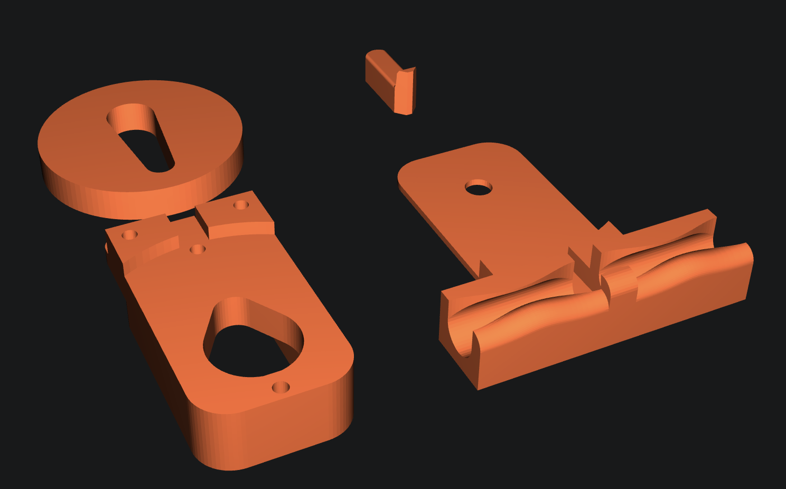
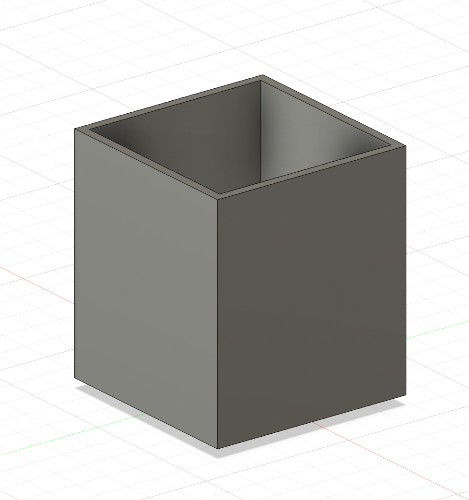
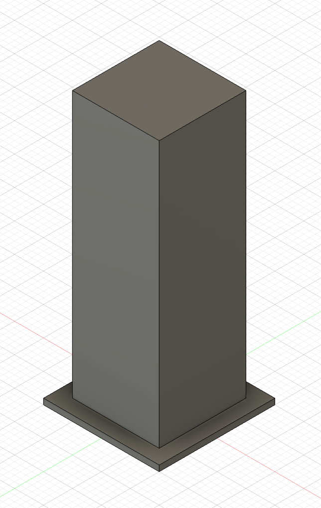
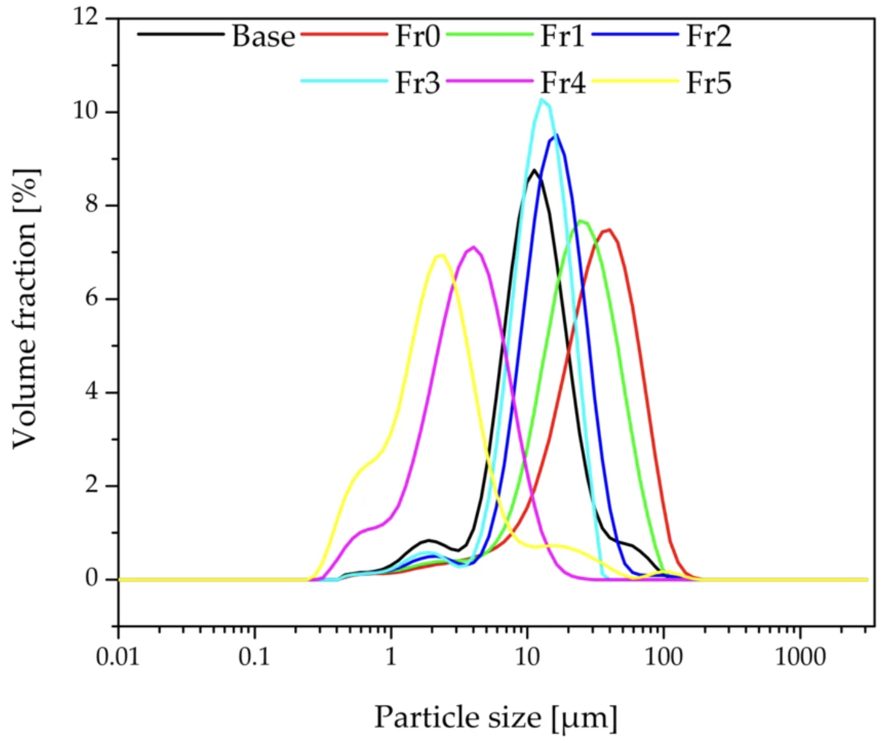
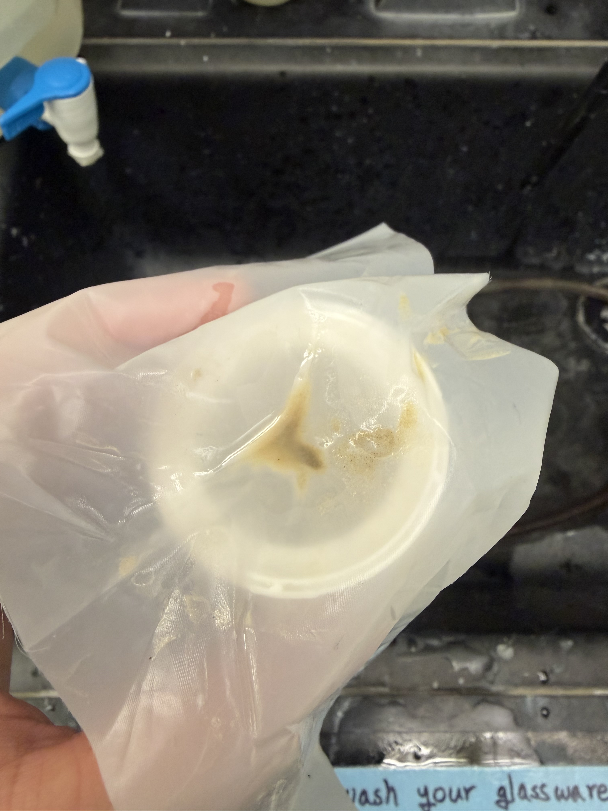
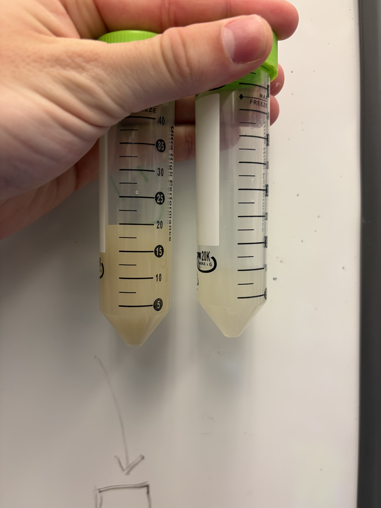
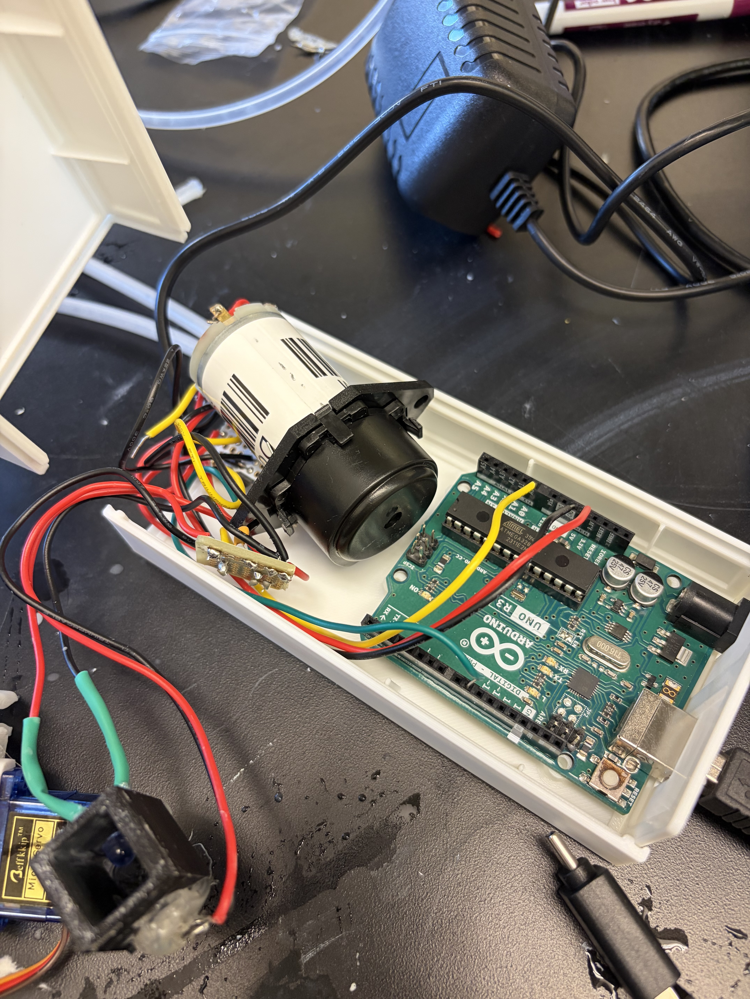
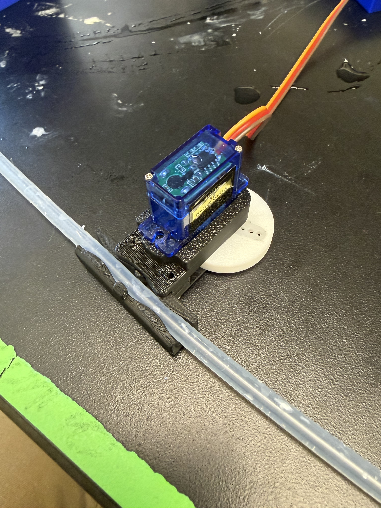

Overview
Demo 2 marks a transition from proof-of-concept to a more integrated and testable prototype. The primary focus areas since Demo 1 were: designing and building pinch valves to redirect water flow when cleaner water is detected, developing a new standalone housing to consolidate all components into a single unit, and extensive testing of the model contaminant (diatomaceous earth) across multiple filter configurations to characterize filtration performance and inform future design choices.
While the turbidity-based feedback loop from Demo 1 remains functional, much of the effort this cycle went into understanding the filtration problem itself: what filter mesh sizes actually capture the DE particles, how concentration and number of passes affect turbidity signal, and what the practical limits are of mesh-based filtration at ambient pressure. These findings are shaping the path toward a finalized filter configuration for the remaining demos.
Prototype Functionality
- 1.Turbidity sensor — reads and logs values; calibration curve established for diatomaceous earth suspensions.
- 2.Peristaltic pump — switches on/off on command; drives flow through the system reliably.
- 3.Filter housing — 3-D printed enclosure fabricated, test-fitted, and integrated with tubing.
- 4.Pinch valve flow diversion — CAD designed and built; valves redirect flow between recirculation and clean output paths based on turbidity threshold.
- 5.Standalone housing — new consolidated enclosure designed in CAD to hold pump, electronics, filter, and tubing in a single unit.
- 6.Filter mesh finalization — multiple mesh sizes tested (100 µm, 50 µm, ~20 µm coffee filter, 2.5 µm Whatman Grade 5); none yet provide the ideal balance of particle capture and flow rate at ambient pressure. Further testing required.
- 7.Model contaminant preparation — centrifuged DE being evaluated as an alternative; particle size distribution investigation ongoing.
- 8.Ultrasonic level sensor — wired and tested standalone; not yet mounted in housing.
- 9.Display screen — not yet sourced or integrated; intended to show real-time turbidity, pH/TDS, and system status to the user.
- 10.pH / TDS sensor — not yet sourced or wired; will provide secondary water quality readings alongside turbidity.
Hardware Progress: Pinch Valves
A key advancement in Demo 2 is the design and construction of pinch valves that allow the system to change the direction of water flow. When the turbidity sensor indicates that the water has been sufficiently cleaned (below threshold), the valve actuates to redirect flow from the recirculation loop into the clean output path. This is a critical piece of the adaptive control scheme: the system can now make a decision about where to send water rather than simply turning the pump on or off.
Pinch Valve CAD

CAD model of the pinch valve assembly used to redirect flow between recirculation and clean output paths.
Hardware Progress: Standalone Housing
The second major hardware development is a new consolidated housing designed to hold the pump, Arduino, turbidity sensor, filter assembly, pinch valves, and tubing routing in a single standalone unit. This replaces the loose breadboard-and-tubing setup from Demo 1 and moves the prototype closer to a self-contained device. The housing was designed in CAD and is being 3-D printed.
Intermediate Tank

CAD model of the intermediate tank. This tank serves as the section between the filter and the sensor and temporarily holds water as it moves through the system.
Filter Holder

CAD model of the filter holder. Water passes through the filter holder and then exits through the hole in the bottom to continue through the flow path.
Structural Stand

CAD model of the structural stand. The stand provides structural integrity underneath the filter and tank and supports the vertical assembly during operation.
Application of ChemE Principles
Particle Size Distribution and Filtration
The effectiveness of any filter is fundamentally governed by the relationship between the filter's pore size and the particle size distribution (PSD) of the contaminant. Diatomaceous earth is composed of fossilized diatom frustules, and published literature on similar commercial DE products shows that the PSD tends to be more uniform than might be expected from a natural material. One might hypothesize that DE sourced from different diatom species or geological deposits would exhibit multiple peaks in the size distribution corresponding to common frustule morphologies, but measured distributions often show a relatively tight, single-peaked curve. Whether our specific DE product follows this pattern or has a broader, multi-modal distribution is an open question that affects how we think about filtration efficiency at each mesh size.
Filter Cutoff Spectrum
We tested four filter media spanning roughly two orders of magnitude in pore size. The 100 µm mesh is far too coarse to capture any meaningful fraction of DE particles and produced no measurable turbidity change. The 50 µm mesh sits closer to the upper end of the DE size range and captures some fraction of particles, producing a modest signal change at high concentrations. The ~20 µm coffee filter approaches the median particle size and should capture a larger fraction, but flow rate is noticeably reduced. The 2.5 µm Whatman Grade 5 filter would theoretically capture nearly all DE particles, but it is so fine that even clean water cannot pass through at ambient pressure, making it impractical without a pressurized system.
Cake Filtration and Multi-Pass Dynamics
A critical filtration mechanism for our system is the formation of a filter cake. On the first pass through a mesh filter, particles larger than the pore openings are physically captured and begin to accumulate on the upstream face of the mesh. This deposited layer of trapped particles effectively reduces the functional pore size of the filter, meaning that on subsequent passes, smaller particles that would have passed through the clean mesh are now captured by the cake layer. This is a well-known phenomenon in cake filtration theory: the cake itself becomes the primary filtering medium. For our system, this means that multi-pass recirculation is not just about repeated exposure to the same filter; each pass incrementally improves the filter's ability to capture finer particles, which is why we expect diminishing but continued improvement in turbidity with additional passes.
Concentration Effects on Detection
The turbidity sensor's ability to detect a change depends on both the absolute concentration of suspended solids and the fractional removal achieved by the filter. At high DE concentrations (2.5% by weight), even a small fractional removal produces a measurable change in light transmission. At low concentrations (0.2% by weight), the same fractional removal produces a much smaller absolute change in sensor voltage, potentially falling within the noise floor of the measurement. This has practical implications for the system's sensitivity and the conditions under which the feedback loop can reliably distinguish filtered from unfiltered water.
Pressure Drop and Flow Rate Trade-off
Darcy's law governs the relationship between pressure drop, flow rate, and filter resistance. As pore size decreases, the hydraulic resistance of the filter medium increases, requiring higher driving pressure to maintain the same volumetric flow rate. Our peristaltic pump operates at essentially ambient pressure, so there is a practical lower bound on filter fineness: below a certain pore size, the pump simply cannot push water through at a useful rate. The 2.5 µm Whatman filter demonstrated this limit clearly. The design challenge is finding a filter pore size that captures enough DE to produce a meaningful turbidity response while still allowing adequate flow at the pressures our pump can deliver.
Feedback Control Loop
The control strategy reads turbidity, compares it to a setpoint, and uses that signal to decide whether water should continue recirculating or be diverted downstream via the pinch valve. With the addition of the pinch valve, this is now a true two-state feedback loop: recirculate or output. The system's ability to make this decision meaningfully depends on the filter producing a detectable turbidity change, which is the central challenge being addressed by the filtration testing.
Filter Pore Size Spectrum vs. DE Particle Range
The diagram below shows where each of the tested filter media falls relative to the expected DE particle size range, illustrating why certain meshes are effective, marginal, or impractical.

Published particle size distribution for DE (https://pmc.ncbi.nlm.nih.gov/articles/PMC9145730/). Note the relatively uniform, single-peaked distribution.
Model Contaminant Testing: Filter Configuration Results
The bulk of the experimental effort for Demo 2 focused on systematically testing different filter configurations with diatomaceous earth suspensions at varying concentrations and pass counts. The goal was to characterize how much turbidity reduction each setup can achieve and whether the sensor can reliably detect those changes. All voltage readings are from the IR turbidity sensor (3 trials per measurement point). The 100 µm mesh was also tested and produced no measurable change; those results are omitted from the tables for brevity.
Test 1: Double-Layer 50 µm Mesh, High Concentration (2.5% wt DE)
25 g DE in 1000 g water (ratio 0.025).
| Trial 1 (V) | Trial 2 (V) | Trial 3 (V) | Average (V) | % Change from Baseline | |
|---|---|---|---|---|---|
| No pass (baseline) | −0.122 | −0.117 | −0.117 | −0.1187 | -- |
| 1 pass | −0.0928 | −0.0879 | −0.0879 | −0.0895 | 24.6% |
At high concentration with double-layer 50 µm mesh, a single pass produced a 24.6% reduction in signal magnitude, indicating that the mesh is capturing the larger fraction of DE particles. The sensor can reliably detect this magnitude of change. The voltage becomes less negative after filtering, consistent with reduced light attenuation from lower particle concentration.
Test 2: Double-Layer 50 µm Mesh, Low Concentration (0.2% wt DE)
0.5 g DE in 250 g water (ratio 0.002).
| Trial 1 (V) | Trial 2 (V) | Trial 3 (V) | Average (V) | % Change from Baseline | |
|---|---|---|---|---|---|
| No pass (baseline) | −0.19062 | −0.1955 | −0.19062 | −0.19225 | -- |
| 1 pass | −0.19062 | −0.19062 | −0.1955 | −0.19225 | 0.0% |
| 2 passes | −0.1955 | −0.1955 | −0.20039 | −0.19713 | −2.5% |
| 3 passes | −0.21017 | −0.20039 | −0.1955 | −0.20202 | −5.1% |
At low concentration, up to three passes through double-layer 50 µm mesh produced no meaningful improvement. The signal actually drifts slightly more negative with additional passes, which is likely sensor noise or minor settling effects rather than a real increase in turbidity. The key takeaway is that at 0.2% wt, the absolute amount of material being removed per pass (if any) is too small to register above the noise floor of the measurement, or the particles remaining in suspension are predominantly smaller than the 50 µm cutoff.
Test 3: Double-Layer 50 µm Mesh, ~1% wt DE
1.01 g DE in 100 g water (ratio 0.0101).
| Trial 1 (V) | Trial 2 (V) | Trial 3 (V) | Average (V) | % Change from Baseline | |
|---|---|---|---|---|---|
| No pass (baseline) | Not yet measured | -- | -- | ||
| 1 pass | Not yet measured | -- | No clear difference | ||
At ~1% wt DE, preliminary observations suggest no clear difference in turbidity after filtering through double-layer 50 µm mesh. Quantitative voltage data has not yet been collected. This concentration sits between the 2.5% and 0.2% tests and will help determine whether the sensor detection threshold is concentration-dependent as expected.
Test 4: Single-Layer 50 µm Mesh, High Concentration (2.5% wt DE)
| Trial 1 (V) | Trial 2 (V) | Trial 3 (V) | Average (V) | % Change from Baseline | |
|---|---|---|---|---|---|
| No pass (baseline) | Results pending | -- | -- | ||
| 1 pass | Results pending | -- | -- | ||
Data collection for single-layer 50 µm mesh at high concentration is in progress. Comparing single vs. double-layer results will quantify how much the second mesh layer contributes to particle capture and whether it is worth the added flow resistance.
Test 5: ~20 µm Coffee Filter
| Observation | Average (V) | % Change from Baseline | |||
|---|---|---|---|---|---|
| Qualitative result | Visible turbidity reduction observed; quantitative voltage data not yet recorded | -- | -- | ||
The coffee filter (~20 µm effective pore size) produced a visible difference in turbidity after filtering, which is promising. Quantitative voltage measurements have not yet been taken. The coffee filter's finer pore size should capture a significantly larger fraction of the DE distribution than the 50 µm mesh, but at the cost of reduced flow rate. Formal data collection is planned.
Test 6: Centrifuged DE Contaminant
| Trial 1 (V) | Trial 2 (V) | Trial 3 (V) | Average (V) | % Change from Baseline | |
|---|---|---|---|---|---|
| No pass (baseline) | Pending filter selection | -- | -- | ||
Centrifuging the DE suspension separates particles by size, allowing the supernatant (containing the finer fraction that passes too easily through the mesh) to be discarded. The remaining pellet retains the larger particles, producing a contaminant with a size distribution that is more favorable for capture by the 50 µm mesh filters. The filter configuration for this test has not yet been determined. Results will be added as testing continues.
Additional Tests (Upcoming)
| Trial 1 (V) | Trial 2 (V) | Trial 3 (V) | Average (V) | % Change from Baseline | |
|---|---|---|---|---|---|
| TBD configuration | Testing in progress | -- | -- | ||
Additional filter configurations, concentrations, and pass counts are being tested. Results will be added as they become available before the demo.
Filtration Test Setup

Filter containing visible DE after pass.
Filter Comparison

Visual comparison of the before and after filtering of 1% DE with coffe filter.
Hardware and Prototype Images
Pump and Turbidity Sensor Circuit

Arduino, peristaltic pump, tubing, and inline turbidity sensor assembly used for prototype testing (carried over from Demo 1).
Pinch Valve Assembly

Built pinch valve assembly for redirecting water flow between recirculation and clean output paths.
Standalone Housing

New consolidated housing for pump, electronics, filter, and tubing. Designed to make the system self-contained.
Circuit Integration and System Assembly
The turbidity-sensor-to-pump control loop from Demo 1 remains functional. The main integration work for Demo 2 has been incorporating the pinch valves into the flow path and beginning to route everything into the new housing. The pinch valves are controlled through the Arduino alongside the pump, using the same threshold-based turbidity logic to decide whether to recirculate or divert flow.
The ultrasonic sensor remains wired and tested as a standalone subsystem. It has not yet been physically mounted in the new housing but will be integrated in a future iteration for final-tank water level monitoring.
Ultrasonic Sensor Circuit

HC-SR04 ultrasonic sensor circuit used for standalone level sensing tests. This setup will later be mounted into the housing for final-tank water level monitoring.
The serial monitor conflict from Demo 1 (USB disconnect when pump activates due to EMI) has been mitigated through improved grounding, though a fully robust logging solution is still needed for long-duration testing runs.
Testing + Performance Summary
| Test | Method | Result | Notes |
|---|---|---|---|
| DE calibration (turbidity sensor) | Known DE concentrations to voltage reading | Curve obtained | Replaced deprecated milk calibration from Demo 1 |
| 100 µm mesh filtration | DE suspension, multiple passes | No effect | Pore size too large relative to DE particle range |
| Double 50 µm mesh, 2.5% wt DE | Sensor before/after filter, 3 trials | ~25% signal change after 1 pass | Detectable; captures upper tail of PSD |
| Double 50 µm mesh, 0.2% wt DE | Sensor before/after filter, 3 trials, up to 3 passes | No significant change | Below sensor detection threshold at this concentration |
| Single 50 µm mesh, 2.5% wt DE | Sensor before/after filter | Pending | Data collection in progress |
| Whatman Grade 5 (2.5 µm) | Flow test at ambient pressure | No flow | Even clean water cannot pass; impractical without pressurization |
| Centrifuged DE | TBD | Pending | Filter selection not yet determined |
| Pinch valve actuation | Arduino-controlled valve switching | Functional | Redirects flow between recirculation and output paths |
| TDS / pH measurement | TDS meter / pH probe | Pending | Sensors not yet sourced |
Project Management + Next Steps
Action items before Demo 3, in rough priority order.
- Blocker Finalize filtration configuration — the model contaminant (DE) is too fine for the current mesh sizes to produce reliable, repeatable turbidity reduction at low concentrations. Need to identify a filter or filter combination (potentially layered mesh + coffee filter, or a custom pore size) that provides both adequate particle capture and sufficient flow rate at ambient pump pressure.
- Testing Complete pending filtration tests — finish single-layer 50 µm mesh testing, centrifuged DE testing, and any additional configurations identified during ongoing work. Fill in data tables above.
- Sensor Source and integrate display screen — add an LCD or OLED display to show real-time turbidity readings, system status (recirculating vs. outputting), and eventual pH/TDS values so the user can monitor the purification process.
- Sensor Source and integrate pH or TDS sensor — select a compatible probe, wire it to the Arduino, and include it in final output monitoring to provide a secondary water quality metric alongside turbidity.
- Integration Complete housing assembly — finish routing tubing, mounting pump, electronics, and pinch valves into the standalone housing. Perform leak testing and verify all components fit and operate correctly within the enclosure.
- Sensor Mount ultrasonic sensor in housing — physically integrate the HC-SR04 above the final tank within the new housing for water level monitoring.
- Software Implement robust data logging — finalize a logging solution (SD card or wireless) that works reliably while the pump is active, replacing the serial monitor workaround.
Timeline + Project Management (Gantt + Milestones)
Milestone Summary
| Milestone | Due Date | Points | Status |
|---|---|---|---|
| Preliminary Design Report | Week 2 | 100 pts (10%) | Complete |
| Initial Design Presentation | Week 4 | 100 pts (10%) | Complete |
| Demo 1: Initial Prototype | Week 7 | 125 pts (12.5%) | Complete |
| Demo 2: Intermediate Prototype | Week 10 | 125 pts (12.5%) | In Progress |
| Demo 3: MVP | Week 13 | 150 pts (15%) | Planned |
| Final Report | Week 17 | 225 pts (22.5%) | Planned |
| Final Demonstration | Week 17 | 125 pts (12.5%) | Planned |
| Total | 1000 pts |
Gantt Chart (Semester Plan — update weekly)
This chart reflects completed work through Demo 1 and current progress on Demo 2 integration, filtration testing, housing development, and valve implementation.
| Task | W1 | W2 | W3 | W4 | W5 | W6 | W7 | W8 | W9 | W10 | W11 | W12 | W13 | W14 | W15 | W16 | W17 |
|---|---|---|---|---|---|---|---|---|---|---|---|---|---|---|---|---|---|
| Preliminary Design (report + block diagram) | |||||||||||||||||
| Initial Design (market research + SWOT + slides) | |||||||||||||||||
| Component testing (sensor + mesh + pump) | |||||||||||||||||
| Demo 1 build + proof of concept | |||||||||||||||||
| Demo 2 integration (valves + filtration + housing) | |||||||||||||||||
| Demo 3 enclosure + robustness | |||||||||||||||||
| Final report + final demo prep |
Legend: Done Active Planned